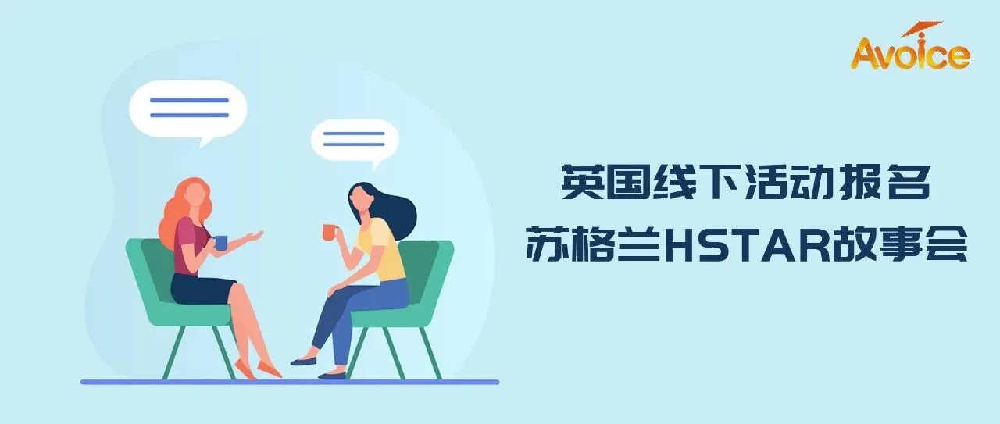
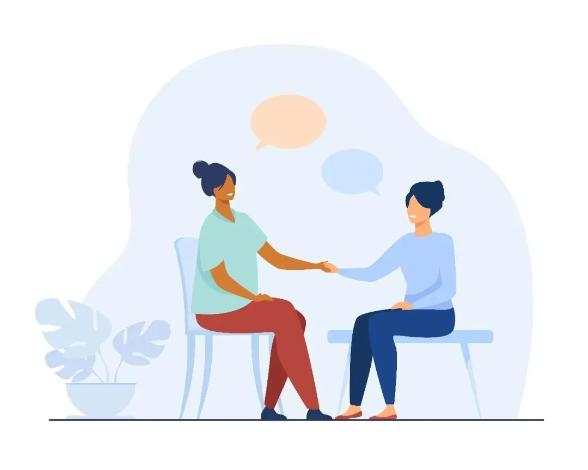
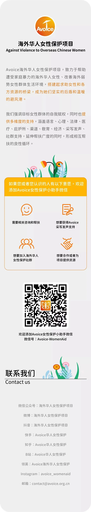

线下活动报名：苏格兰HSTAR故事会
图片来源: freepik
活动邀请
此活动由苏格兰HSTAR作为主办方在英国线下举行，苏格兰HSTAR特别邀请Avoice作为合作伙伴参与此次活动，欢迎大家踊跃报名！
活动介绍
苏格兰HSTAR是支持女性并帮助她们克服创伤的组织。HSTAR相信人皆有故事以分享，因此将免费为妇女及相关组织举办四月故事会——“Storytelling workshop journey of creativity for women”。HSTAR希望通过故事会激发你的创造性，并助你找寻讲出心中故事的潜能！这将是一个友爱、有趣、全女性的会议，你不必担心，也不必害怕说出你的故事，你只需真诚地向与会的朋友们分享你的故事。
本次会议将由苏格兰故事讲述协会同热情才华兼备的你们协作。会后，女士们将有机会享用一顿佳肴，建立全新友谊、打破社会隔阂。餐后，我们将迎接活动中互动性十足的环节—— OPEN MIC将为大家提供故事分享与倾听他人轶闻的良机。
通过此次故事会，我们希望能够加大与所有杰出妇女之间的合作，在她们所在的社区乃至世界各地掀起性别平等的浪潮。

图片来源: freepik
活动详情
时间
4月6日（周三）18:00 – 20:30 BST
活动费用
免费（包括晚餐）
地点
Mediterranèa, 4 Viewfield Place,
StirlingFK81NQ, United Kingdom
报名链接
可扫码二维码或通过点击文章底部“阅读原文”提交报名信息。
文字 I Avoice Team
排版 I Kristina
图片 I Kristina

